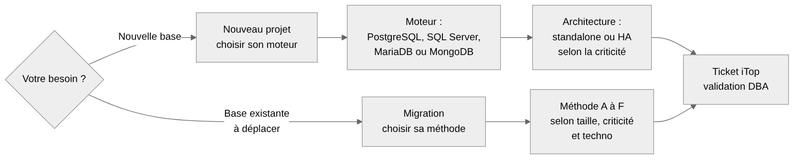

Toute demande de base passe par le DBA, via un ticket iTop (pas par email). Cette page sert à préparer la demande : vous arrivez avec les bonnes réponses, le DBA valide le choix et le réalise.
| Vous voulez… | Page à suivre |
|---|---|
| Créer une base pour un nouveau projet | Nouveau projet : choisir son moteur |
| Migrer une base existante vers un nouveau serveur (OS obsolète, nouvelle VM) | Migration : choisir sa méthode |

On ne propose que ces quatre moteurs, dans ces versions. Une version différente, ou un autre moteur, demande une dérogation validée par le DBA.
| Techno | Version cible | Statut |
|---|---|---|
| SQL Server | 2022 | Validée |
| PostgreSQL | 17 | Validée |
| MariaDB | 12.3 LTS proposée, support jusqu'en juin 2029 (annonce MariaDB, cycle de vie) | À valider selon le miroir interne |
| MongoDB | 8.0 proposée (dernière majeure disponible sur le miroir) | À valider : miroir interne, édition Community ou Enterprise |
mongodb+srv://), qui porte la
liste des membres du replica set.| Qui | Fait quoi |
|---|---|
| Squad | Demande iTop, réponses aux questions de cadrage, tests applicatifs, go / no-go |
| DBA | Choix du moteur ou de la méthode, installation, création des bases et des comptes, migration, contrôles techniques |
| ASR | VM, création et bascule des alias DNS |